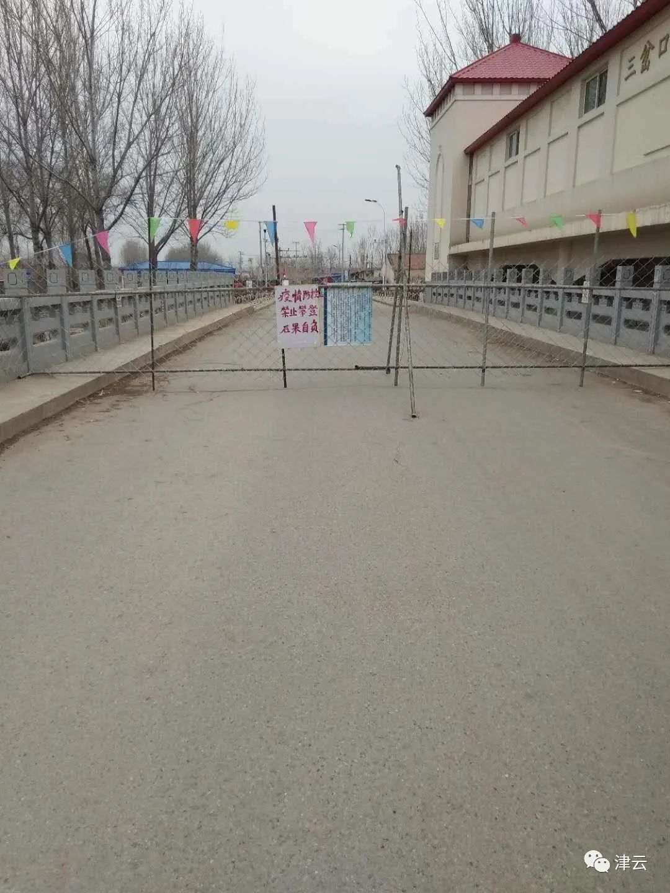

复工遭遇五花八门的证明，上班族吐槽为开证明跑断腿
原文链接 备份链接 防疫压力层层传导，但各区域、 部门之间缺乏互通互认的信息共享机制超长春节假期终于结束，上班族等来了复工通知。 数据显示，2月14日至2月22日，全国累计发送旅客1.17亿人次，每日客流量均实现环比增长。但在返程速度逐渐 …
津云新闻记者 霍艳华 摄影 蒲永河
截至目前，在天津的新冠肺炎地图上，只有两个空白的地方，一个是蓟州区一个是静海区，其中，蓟州区距离天津确诊病例最多的宝坻区仅一步之遥。到目前尚能保持“零”纪录不被打破，他们是如何做到的？日前，津云新闻记者来到了蓟州区最南部、距离宝坻最近的蓟州区侯家营镇，实地了解这里的疫情防控工作。
危险：一桥两端 疫情如此之近
侯家营镇地处蓟州最南端，是蓟州的“南大门”。疫情开始之初，侯家营镇也像其他街镇一样，按照全市的部署和区里的安排，将关注重点放在了湖北返津人员上。当时，该镇除了在湖北上大学的学生，其它相关人员较少。
“我们镇在湖北上大学的学生人数很少，且1月初放假就都回来了，我们需要重点监控的人群相对有限。”侯家营镇党委副书记、镇长钱立军说。
随着疫情的发展，特别是1月23日武汉封城的消息传来，钱立军感觉事态越发严重了。果不其然，大年三十16:00，蓟州区便召开视频会议对防疫提出了新的要求，各村党政负责人必须在岗在位，封村管控开始了。


“下午开完会，晚上6点多我们就开始布置任务。啥年夜饭、春晚，全都不想了，道路管控，大喇叭广播禁止初一串门、拜年了。”钱立军说。
按照要求各村仅留一条进出道路，但是大年三十晚上，找不到封控其他道路的东西，很多村子就先把车子横路上，防止车辆人员出入，经过连夜封堵，大年初一早上各村进出道路就剩一条了，还有专人在岗把守。
“大年初一一早，各村就严防死守拜年、串亲戚的，初二想回娘家的，我们也禁止姑娘姑爷们回来，让他们打电话拜年、微信拜年。”钱立军说。
封控工作有条不紊，虽然紧张、压力也很大，但是真正让钱立军感到“炸锅”了的，还是从1月30日大年初六宝坻区陆续出现聚集性确诊病例开始。

侯家营镇与宝坻区一桥之隔
钱立军说，他们镇距离宝坻区仅有一条泃河相隔，最近的村庄间仅隔一座小桥，桥两端不到50米的距离，走路过去几分钟，即便是到达宝坻城区也仅需20分钟车程，而去蓟州城区则需要40分钟，因此，侯家营镇居民平时购物都往宝坻跑。春节前夕，该镇的村民们更是频繁往宝坻采购年货，而且镇里不少人都在宝坻有房子，亲戚好友在宝坻的更是不计其数。
不仅如此，侯家营镇是三岔口乡和侯家营乡合并的，而侯家营镇很多人看病是去宝坻区的三岔口卫生院看病，那里就有新冠肺炎确诊病例去过。后来，泃河对面的宝坻区朝霞街道小吴庄村里也发现了确诊病例。
“当时真的措手不及，没想到。”回想当天的情景，钱立军历历在目。
排查：女大学生瞒报武汉接触史
怎么办，先排查，摸清底数。
侯家营镇43个村，村子大大小小，人数不一，从二三百人到二三千人，排查难度不小。每个村的镇包村干部、村干部、派出所包片民警、村医，四人联保，逐家逐户排查，生怕排查漏了造成严重后果。
老宋庄村就是一个有着2600余人的大村，该村支部书记兼村主任周志强给记者拿出了一本厚厚的统计表，他说，从统计湖北武汉返津人员、去过宝坻百货大楼、去过确诊病例轨迹地方的、去过宝坻的人员……他们挨家挨户统计了不下四五遍，638户挨个打一遍，很多时候都要打到后半夜。
“凌晨三四点打电话，我们心里也忐忑，会不会让人嫌烦啊，但是抢时间，没办法。”周志强说。

辛苦还在其次，村干部最怕的就是瞒报。大年三十，该镇有名女孩在家洗澡感冒发烧了，就去了卫生院，医生询问是否去过湖北时，她说自己在天津上大学，后来镇里把这个情况上报后。初一凌晨3点钟，经过公安排查，发现她从武汉回来的。这一下子，村镇干部们就紧张起来了，凌晨4点，村干部就赶到这户，并安排了隔离观察，120救护车随后将女孩接到了指定医院进行检查。“好在最后检查结果没有问题，但这说明抱有侥幸心理的人还是有的。”周志强说。
为了解决这一问题，村干部们只能不厌其烦地跟村民们反复核实，晓之以理动之以情，从法律层面告诉他们瞒报犯法，从感情上让他们认识到瞒报害人害己。
周志强说：“我跟村民们讲，你不知道你有没有事，这病毒看不见摸不着，你告诉我们实话，我们可以对你保护，隐瞒不报，后果你承担不了。”
同时，村民之间也相互监督，有时乡里乡亲直接说伤和气，就微信、电话甚至8890反馈到村干部那，后来大数据技术也运用进来，村民们也知道很难瞒报，基本上也不敢了。
经过统计，侯家营镇3.9万人，43个村子，仅有2个村子没有人员前往过宝坻百货大楼，43个村全部都有人员到过宝坻区，从1月19日到1月25日，全镇去过宝坻百货大楼的就达到978人，去过宝坻其他确诊病例轨迹地区的1228人，这些人都需要居家隔离观察。而去过宝坻区的人员更多，有的一个村2000多人，都需要居家医学观察。
封控：面临“亲情关”考验
这么多人居家隔离，如何确保不出门？像老宋庄村光去过宝坻百货大楼的就有80多人，需要居家观察的1289人，光靠几个村干部盯着是不够的，于是他们就想了“封门”的办法，但是给大门上贴封条，大过年的不好看，村干部们就用福字去代替。
但是即便是这样，村民们也有不乐意的，周志强的叔伯兄弟是从宝坻回来的人员，周志强就把弟弟一家的大门上贴了福字，周志强的亲叔叔一看不乐意了，电话里梗脖子对他吼道：“你怎么把我门封上了，干啥！”
周志强只能耐心地听叔叔发火，但是叔叔发泄过后，这门还是要堵的，周志强只能告诉叔叔，有什么需要打电话。
为了封控这事，村干部没少受委屈，就连一些志愿者都跟着受气。宋智勇在北京做了18年的花店生意，这次看到村里进行疫情防控，他就主动当起了志愿者。他把自家的桌椅、电脑、暖气、测温仪都提供到检查点，日夜坚守。有一次，一位不需要居家隔离的小伙子，进出村子嫌登记麻烦，乱发脾气，骂了宋智勇。
周志强找到小伙子跟他说：“人家志愿者为了啥？不是为了你好吗？你可以不为社会做贡献，但是你得为家里人负责。”最后小伙子也意识到自己错了，回来跟志愿者道歉。

志愿者宋智勇
不让出去一天两天还行，但是这前前后后一个月了，在家的人想出去，在外面的人想回家。但是为了村里的安全，村干部首先要以身作则，不能开这个口子。
中周庄村村支部书记兼村主任冯小波的爱人杨小艳是侯家营镇120急救中心的护士，自从疫情开始以来，杨小艳就没回过家，冯小波不让她回来，即便杨小艳单位开证明没问题，冯小波也不同意，他说：“我必须以身作则，要是人家村民说，为啥你媳妇能回来？这就不好了。”
一个月都没见到孩子，杨小艳非常想念两个宝贝，然而，冯小波自己也忙得分不开身照顾孩子。前几天学校开学上网课，家里老人不会弄，平时不让孩子玩手机电脑的冯小波，也顾不了那么多，就把手机电脑扔给女儿和儿子，让他们自己弄了，但是小孩子自控能力差，没人监督就玩上了，气得杨小艳直骂冯小波，只能眼睁睁地等着封控解除，回家再自己照顾孩子了。
服务：赔钱也觉得值得
不让居家隔离的村民出门，很多事就得村干部代办，从柴米油盐，到卫生纸、纸尿裤、药、电费、燃气费，村干部们都得一一代劳。
周志强说，村里有村民需要做透析，村干部也得跟着去，更别说发烧、嗓子疼的，只要有，就得村干部一起去，排除新冠肺炎可能的也得由村干部接回去。一个月的时间里，这样的情况几十次，一趟70里地，村干部们可真跑了不少路。
中周庄村的支委刘庆国和老主任许丛朋主动承担起给村民们买菜的任务，提前一天他们在微信上问好了各家的需求，转天许丛朋就开着自家的厢货去给村民买菜，为了给村民们买到最便宜的水果蔬菜，他们凌晨两三点出发去蓟州区官庄镇的蔬菜批发市场，一趟下来要拉2000多块钱的东西，外面辣椒7元/斤，他们给村民买回来的价格3.5元/斤，赶上瓜菜磕碰，损失就由他们承担，几趟下来油钱、损耗，赔了五六百元。
但是中周庄村的村干部们说，将心比心，再累再苦，只要咱们村安全，都值得。
成果：“零”纪录未打破
到现在新冠肺炎患者数字能够保持在“零”，镇长钱立军感叹说“运气不错”，因为全镇978人去过宝坻百货大楼而没有感染。但是，回想起来，钱立军也坦言有些“后怕”，如果不是大年三十果断封村，如果不是大年初一到大年初五严禁拜年，后果可能不堪设想。
钱立军说，这首先是村干部们的防控意识到位。一方面得益于2018年以来村级组织换届选举选出的村干部政治素质高、能力强、执行力强。另一方面，侯家营镇有防控2018年非洲猪瘟的经验。有了上一次的经验，这次涉及到人，村干部们更知道严重性了，也知道如何防控。
像中周庄村的冯小波、刘凤伟都是复员军人，说话办事自带部队雷厉风行的作风。冯小波说，他作为汽车兵参加过汶川地震的抢险救援和灾后重建工作，2003年抗击非典的时候，他也在部队，在部队里他们学习过有关疫情防控的知识，知道抗击病毒也是一场战争，要服从命令听从指挥。
“做军人，死也死在战场上！防控疫情也是一样！”冯小波说。
第二，钱立军认为就是宣传到位，对于农村来说，大喇叭广播非常有效。
2018年蓟州区完成了村村通广播，区、镇、村三级都可以控制播放系统，疫情防控期间，每天从早6点多到晚10点，区里时段播完镇里时段播，村里再不时继续宣传，另外，还增加了流动播放和手持播放。

钱立军笑着说：“我们的大喇叭广播宣传密集到什么程度？到后期，都有老百姓到8890‘投诉’的，说大喇叭影响他们休息了。但是不这样宣传不行，有些老年人不看手机、不上网，很多信息他们不了解，大喇叭广播对老年人还是很管用的。”
虽然被百姓投诉，但是钱立军说，他们广播的宗旨只有一个，那就是让老百姓入脑入心。当然，在村里用大喇叭广播还要有些技巧，拿稿子念村民们可能听不进去，说点直白的话，让村民们能听懂。
在村民的观念中，就怕自己有什么短处被别人指指点点，对于疫情防控，宣传也是以这个“点”为切入做老百姓的工作，告诉村民做好居家隔离，别连累了别人。这样的宣传非常有用——中周庄村一个小伙子从上海乘机返乡，他没有去过宝坻，但是母亲和妹妹去过宝坻百货大楼。有一天他发烧了，小伙子就急得赶紧跟村干部说：“大哥，不中，我发烧了，39℃，我心跳啊，现在待不住了，必须打120去医院。”
到了医院，医院就把他留观检查，小伙子的父亲得知这一情况后，在电话里就跟村书记冯小波哭了起来，他说：“我们要真是染上了，传了别人，这一辈子我们家就抬不起头来了。”好在两次核酸检测呈阴性，小伙子就回来居家隔离了。冯小波赶紧用大喇叭广播，告诉村民们已经排除新冠肺炎了，不能对人家有看法。
复工：农业时节刻不容缓代管大棚
近一段时间，随着解除隔离的人越来越多，已经差不多一个月每天就睡三四个小时的周志强说心里看见点“亮”了，他说前一段时间自己的心态也跟生病了一样，一听打电话去医院就揪心。最近周志强又在忙着复工复产的事，现在提出申请的人越来越多，涉及外来人员较多，他需要逐个跟用工企业核实，确定得把人管理起来。

下地干活的村民在出入村登记
在老宋庄村村民宋国芳的蔬菜大棚里，宋国芳正在绑西红柿苗，再过半个月，这一大棚西红柿就该收获了。宋国芳说，年前他就忙着蔬菜收获没有出门，疫情一来，他正好踏踏实实管理自家的大棚。宋国芳有5个大棚，主要种植西红柿和豆角，以前有2个工人帮忙干活，现在为了疫情防控，他们只能暂时让工人们在家待着。农活都靠宋国芳和老伴一起忙活，从早8点要忙到晚6点，为了减少进出村，他们中午也不回家了，就在棚里休息一会儿。

宋国芳的西红柿大棚
宋国芳说，地里的农活不能停下，现在特殊时期，的确有一些不方便，他们也都理解。“再说还有政府帮忙呢！”宋国芳说。
钱立军说，老百姓不干活就没有收入，这是生计问题，因此，复工复产是这一段的重点。侯家营镇是一个设施农业大镇，很多村民都有大棚，育秧、播种春小麦也是刻不容缓。不过疫情防控还是不能放松，可以出来干农活的是不需要居家观察或者解除隔离的人员，每天进出村都要登记、量体温。雇佣其他村村民的农户，要向村委会提出申请，向镇里上报，然后涉及到哪个村，通知该村的包村干部，去核实雇工的情况，合格了才能上工干活。而涉及居家隔离的人员，村里就找别人代管一下。农资方面，农资部门会将农资送到村口，再发到各家各户。
“只有做到防疫与生产‘两手抓’，妥善的处理二者之间的矛盾，对每一个环节严防死守、谨慎认真，才能保障农民人身健康安全、保障农村经济收入不受损失。”钱立军表示。
记者手记
蓟州区防控之严，记者深有感触。一出津蓟高速上仓收费站，就感受到这里严防死守的氛围。除了登记、测体温的一系列流程外，高速收费口的检查人员，还详细询问了记者的目的地，由于记者对于要去采访的点位说得不够具体，检查人员拒绝放行，必须由对接人员现场赶来确认。
在等待期间，记者看到一位送货到城区的人员，回村后，检查人员将送货人员的信息与村镇核实后，确定人员没有问题才对其放行。在与蓟州区的工作人员对接后，记者才跟随工作人员来到了侯家营镇，一路上，路上车辆极其稀少，每个村口都有工作人员值守。
见到了侯家营镇党委副书记、镇长钱立军时，只见他双眼中爬着红血丝，钱立军坦言，从疫情开始以来该镇的防控压力很大，最近复工复产又开始，防控方面需要解决的问题不少，但是为了守住、守好蓟州区的南大门，多辛苦都值得。
在采访中，记者也发现党员干部们在防控一线上的工作得到了百姓的支持和尊敬，记者询问村民宋国芳：“严密的防控会不会给生活带来不便？”老宋说：“一开始也觉得麻烦，但是这也是为我们好，我们麻烦也没有我们书记辛苦，我们书记都瘦了。”
“众志成城你我他，战胜病毒靠大家。”这是侯家营镇为疫情防控编写的顺口溜，干部群众唯愿疫情早日过去，恢复到正常生活。
本期编辑 邢潭
推荐阅读


原文链接 备份链接 防疫压力层层传导，但各区域、 部门之间缺乏互通互认的信息共享机制超长春节假期终于结束，上班族等来了复工通知。 数据显示，2月14日至2月22日，全国累计发送旅客1.17亿人次，每日客流量均实现环比增长。但在返程速度逐渐 …
原文链接 备份链接 澎湃新闻记者 林平 2月26日上午，国务院应对新型冠状病毒感染肺炎疫情联防联控机制举行新闻发布会，介绍《关于政法机关依法保障疫情防控期间复工复产的意见》有关情况。 近期监狱病例激增所致，疫情如何在监狱传播？目前治疗情况 …
原文链接 备份链接 “ - 疫 情 之 下 - 疫情没有结束，我们的工作仍在继续。在这场“战疫”中，我们的付出终有所获，经营户对我们的理解，人民群众对我们的信任，鼓舞着我们在疫情蔓延的环境下不断向前。 ” 我的朋友是一名市场监督管理所的 …
原文链接 备份链接 1月23日武汉封城前，有近70万黄冈人从武汉返乡，并带回新冠疫情。这些返乡人员分布在黄冈市下辖的10个县市区。 其中一个人口百万的县，确诊病例数在全市排名靠前。曾在武汉出现的床位紧缺、物资告急、病毒检测困难，在这座 …
原文链接 备份链接 近50万人的社区防疫战， 流动人口密集与社会治理下沉之困 天通苑人员密集，外来人员多。2月6日以来，北京市疾控中心连续发布新发病例活动过的小区或场所，天通苑社区占了6例。 从最早风传限制外地人员返回社区，到天通东苑二区 …